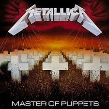
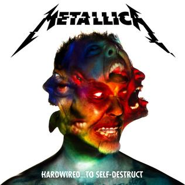

James Alan Hetfield
James Hetfield is the legendary rhythm guitarist and lead vocalist of the American thrash and heavy metal band Metallica. Known for his distinctive vocal style and iconic guitar riffs, he propelled Metallica to superstardom during the mid 80's up to the present day and inspired a lot of heavy metal bands across the world. Many young guitarists decided to pick up and play the guitar because of James and I'm one of those. His music and lyrics helped me through the good and the bad times of my life. I created this page to give tribute to the man who made a lasting impression in my life.
- James Alan Hetfield (born August 3, 1963) is an American musician and songwriter, best known as the co-founder, lead vocalist, rhythm guitarist and primary songwriter for heavy metal band Metallica.
- He is mainly known for his intricate rhythm playing, but occasionally performs lead guitar duties and solos, both live and in the studio
- James co-founded Metallica in October 1981 after answering an advertisement by drummer Lars Ulrich in the Los Angeles newspaper The Recycler.
- Metallica has won nine Grammy Awards and released ten studio albums, three live albums, four extended plays and 24 singles.
- In 2009, Hetfield was ranked at No. 8 in Joel McIver's book The 100 Greatest Metal Guitarists and No. 24 by Hit Parader on their list of the 100 Greatest Metal Vocalists of All Time.
- In Guitar World's poll, Hetfield was placed as the 19th greatest guitarist of all time, as well as being placed second (along with Metallica lead guitarist Kirk Hammett) in The 100 Greatest Metal Guitarists poll of the same magazine.Rolling Stone placed him as the 87th greatest guitarist of all time.

Master of Puppets
This is the third Metallica album released in 1986. Considered by many as the greatest heavy metal album ever. It contains many of the most iconic and tasty heavy metal riffs crafted by James.

Ride the Lightning
Their sophomore album. This is my favorite Metallica record. This showcased James' mastery of the heavy metal rhythm guitar.

Hardwired to Self Destruct
This is their most recent work, released in 2016. It marked the return of Metallica to their roots and James' form was back to its 80's counterpart.